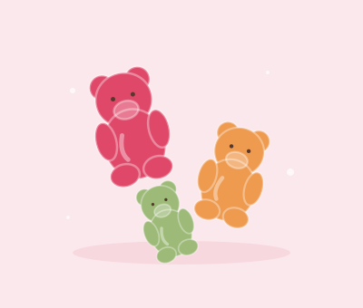
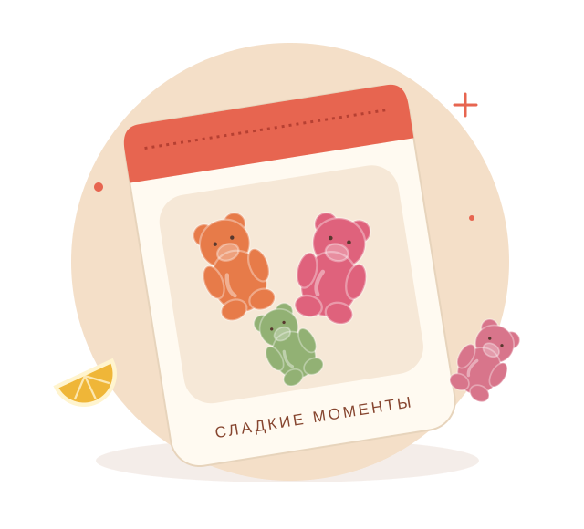

ФруктовыйРадость в каждой мармеладке
Пусть день
будет слаще.
Ягодные мишки, солнечные дольки и немного кислинки. Маленькие вкусные поводы порадовать себя и тех, кто рядом.
Выбрать мармеладДля себя. Для друзей. Просто так.

счастьена вкус✳
♡ Вкусы под любое настроение✳ Удобные небольшие упаковки↗ Наборы для сладких моментов
Найдите своего любимчика
С чего начнём?

Ничего лишнего. Только радость.
Маленький магазин.
Большая любовь к сладкому.
Мы придумали «Мармеладную» как уютное место, где легко выбрать лакомство к чаю, маленький подарок или любимый перекус. В каталоге всего несколько вкусов — чтобы решение было простым, а настроение хорошим.
Немного о насНа всякий случай
Пара сладких вопросов
Как выбрать мармелад?
Для мягкого ягодного вкуса выбирайте мишек, для свежей цитрусовой ноты — дольки. Любителям кислинки подойдут червячки. В наборе «Сладкий микс» можно попробовать всё понемногу.
Можно ли заказать сладости по-настоящему?
Это учебный проект. Корзина и оформление работают в демонстрационном режиме: товары не отправляются, оплата и персональные данные не запрашиваются.
Как хранить мармелад?
Держите упаковку плотно закрытой в сухом прохладном месте, вдали от солнца. Для реальных сладостей всегда проверяйте условия и срок хранения на упаковке производителя.